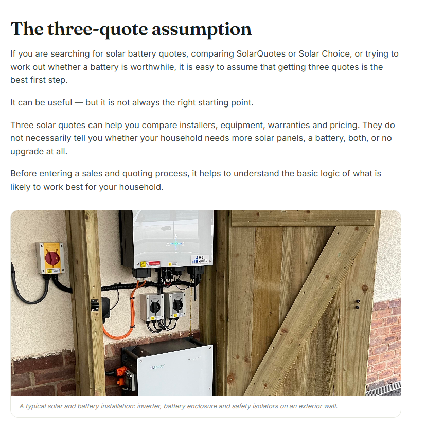

Before you get solar quotes, find the right solar and battery setup
Comparing SolarQuotes or Solar Choice, or weighing up a battery? Three quotes can compare installers — but they can't tell you what your household actually needs. Here's the logic to work out first.
The three-quote assumption
If you are searching for solar battery quotes, comparing SolarQuotes or Solar Choice, or trying to work out whether a battery is worthwhile, it is easy to assume that getting three quotes is the best first step.
It can be useful — but it is not always the right starting point.
Three solar quotes can help you compare installers, equipment, warranties and pricing. They do not necessarily tell you whether your household needs more solar panels, a battery, both, or no upgrade at all.
Before entering a sales and quoting process, it helps to understand the basic logic of what is likely to work best for your household.
SolarQuotes, Solar Choice and the three-quote process
Services such as SolarQuotes, Solar Choice and other solar comparison platforms can be a convenient way to find installers and request multiple proposals.
That has obvious benefits. Solar and battery systems are significant purchases, and comparing installer experience, product options, warranty support, inclusions and price is sensible.
However, a quote-request service generally begins a process in which several businesses contact you to recommend and price a system. Each business may have different preferred brands, product availability, installation methods, commercial arrangements and views about system design.
As a result, you may receive several different recommendations:
Any one of those recommendations may be appropriate. But without a clear understanding of your household energy profile, it can be difficult to tell which proposal is genuinely aligned with your needs.
Comparing quotes is not the same as choosing the right system
The central issue is that solar and battery quotes are often not like-for-like.
One installer may quote a 10 kWh battery. Another may recommend 13 kWh, while a third proposes 20 kWh of storage alongside additional solar panels and a new inverter.
Those quotes may all look professional. Each may include credible products and legitimate savings estimates. Yet they may be solving different problems.
A lower-priced proposal may involve a smaller battery that does not cover much of your evening electricity use. A larger system may offer greater capability but cost more than the likely benefit justifies. A full system replacement may be sensible if your existing equipment is old or incompatible — or unnecessary if a battery retrofit is practical.
The right solution is not automatically the cheapest, largest or most heavily promoted one. It is the system that best matches your household's electricity use, solar generation, equipment, tariff and goals.
Why solar and battery quotes can be so different
Different installers can reach different recommendations because a solar and battery upgrade involves more than a simple product choice. A useful analysis should consider:
- Annual household electricity consumption
- Daytime, evening and overnight energy use
- Existing solar capacity and actual generation
- The amount of solar energy you export to the grid
- Your electricity tariff, including time-of-use rates where relevant
- Your feed-in tariff and the value of exported solar energy
- Existing inverter type, age and battery compatibility
- Roof space, panel orientation, shading and network export limits
- Expected changes to the household, such as an EV, pool, heat pump, home office or replacement of gas appliances
- Your objectives, including lower bills, backup power, greater energy independence or environmental outcomes
For example, a home with high daytime solar exports and substantial electricity use after sunset may be a sensible candidate for a battery.
But a household with a small existing solar system and available roof space may benefit more from additional panels before considering battery storage.
And sometimes the analysis may suggest that no major upgrade is currently justified. That is still a useful outcome: it can prevent an expensive decision being made before the underlying numbers support it.
Do you need more solar panels, a battery, both — or neither?
There is no single answer for every Australian home. The best next step will usually fall into one of four broad categories.
1 Add more solar panels
Additional solar panels may be worth investigating where:
- Your current solar system is relatively small
- Your household still buys significant electricity during daylight hours
- You have suitable roof space with limited shading
- Your inverter and network connection can accommodate expansion
- You anticipate higher future electricity use, such as EV charging or electrification
More solar may reduce daytime grid purchases and provide additional energy that could later support a battery.
2 Retrofit a battery to existing solar
A battery retrofit may be worth exploring where:
- Your household exports substantial solar energy during the day
- You buy a meaningful amount of grid electricity in the evening or overnight
- Your current solar system is producing reliably
- Your equipment and switchboard can support a battery installation
- You understand the distinction between bill savings and backup-power capability
In many cases, an AC-coupled battery can be added to an existing solar system without replacing the original solar inverter. However, a qualified installer must assess compatibility, system condition, network requirements and site-specific electrical issues.

3 Add solar and battery capacity together
A combined upgrade may be appropriate where the existing solar system is too small to create sufficient surplus energy for storage, while the household also has substantial evening consumption.
This approach can make sense for some homes, but it requires careful sizing. Installing a large battery without enough solar energy to charge it — or adding panels without considering the timing of household use — may reduce the value of the investment.
4 Make no change for now
Sometimes the best immediate decision is to wait.
That may be the case where the likely savings are limited, the existing system is already well matched to household use, major lifestyle changes are expected soon, equipment replacement is imminent, or the household wants to monitor its consumption before committing to a larger investment.
Good consumer advice should be able to identify when an upgrade may not yet be the strongest option.
How to use solar quotes more effectively
Solar comparison services can still be useful once you have a clearer idea of what you are trying to achieve. Instead of asking installers to decide everything from the beginning, you can approach the quote process with a more informed brief. That makes it easier to compare scope, equipment, service and price.
When reviewing quotes, consider asking:
A free starting point for solar and battery decisions
A free solar and battery analysis tool can help Australian households assess their options before they become caught between competing recommendations.
It does not sell a particular panel, battery or installation package. Instead, it helps you understand the likely logic of the available pathways:
- Retain your current system
- Add solar panels
- Add battery storage
- Combine solar and battery upgrades
- Investigate further because existing equipment may limit the available options
The goal is not to replace installer advice. A qualified installer remains essential for site inspections, electrical design, safety, compliance, final equipment selection and installation.
The goal is to give you a clearer starting point — so you can seek quotes with confidence, ask better questions and recognise whether a proposal is likely to suit your home.
Find your pathway before the quotes arrive.
The free Solar Sensei analysis models your usage, tariff and existing system — then ranks solar, battery and combined options so you enter the quoting process with a brief.
Start your free analysisFrequently asked questions
Is SolarQuotes a good way to get solar quotes?
SolarQuotes and similar services can be a convenient starting point for finding installers and obtaining multiple proposals. However, quotes are generally most useful after you have assessed the likely solar and battery configuration for your household. Comparing several proposals does not automatically determine whether you need more solar panels, a battery, both or no upgrade.
Is Solar Choice a good way to compare solar and battery systems?
Solar Choice and other comparison services may help consumers connect with providers. The important distinction is between comparing suppliers and deciding what system your household needs. Consider your energy usage, existing solar generation, exports, electricity tariff and future demand before deciding whether a recommendation is appropriately sized.
Are three solar quotes enough?
Three quotes can help compare installer scope, pricing, equipment, warranties and service. But they may not identify the best system design if each quote recommends a different solution. Establishing a likely household-level upgrade path first makes quotes easier to compare.
Should I add a battery to my existing solar system?
It depends on your solar exports, evening and overnight electricity use, retail electricity tariff, feed-in tariff, existing equipment, battery compatibility and goals. A battery may be worth investigating where you regularly export solar energy during the day and purchase significant grid electricity after sunset.
Is it better to add more solar panels or a battery?
Additional panels may be the stronger first option where your existing solar system is small and you have suitable roof space. A battery may be more appropriate if you already export substantial solar energy and use significant electricity outside solar-production hours. The best option depends on your household data and objectives.
Can I add a battery to an older solar system?
Often, yes. An AC-coupled battery can often be added without replacing the existing solar inverter. A qualified installer should assess equipment condition, electrical compatibility, switchboard capacity, network requirements, backup-power needs and site-specific design issues before work proceeds.
Can a solar battery save money in Australia?
A battery can reduce grid electricity purchases by storing solar energy for later use. The financial result depends on upfront cost, usable capacity, electricity and feed-in tariffs, household consumption, solar generation, battery operation, degradation and warranty terms. A household-specific assessment is more useful than generic savings claims.
Comparison: Solar vs. Solar + Battery
| Feature | Solar-Only System | Solar + Battery System |
|---|---|---|
| Typical Payback Period | 3–5 years | 7–12 years |
| Primary Benefit | Daytime bill reduction | Evening energy independence |
| Incentives | STCs (Federal) | STCs + State-based battery rebates |
| VPP Eligibility | No | Yes (Additional credits) |
| Installation Complexity | Standard | High (Requires AS/NZS 5139 compliance) |
Key Solar & Battery Terms
- AS/NZS 5139:2019
- The mandatory Australian standard for battery safety, restricting installations in habitable rooms or near windows without fire barriers.
- AC-Coupling
- A method of adding a battery (like the Tesla Powerwall) to any existing solar system without replacing the inverter.
- DC-Coupling
- Connecting a battery directly to a compatible 'hybrid' inverter; often more efficient for new installations.
- VPP (Virtual Power Plant)
- A network of home batteries that work together to support the grid, providing owners with ongoing credits that can reduce payback periods.
Key Takeaways
- ✓ Beyond the Three-Quote Rule: Getting three quotes is standard, but it often leads to comparing incompatible solutions (e.g., different battery sizes) rather than finding the best fit for your specific energy profile.
- ✓ Data-Driven Sizing: Experts suggest sizing batteries based on 4pm–10pm consumption rather than total daily use; a 10–15 kWh battery is often the 'sweet spot' for Australian homes.
- ✓ Financial Realities: Solar-only systems typically pay back in 3–5 years, while adding a battery extends this to 7–12 years depending on state-specific electricity prices and VPP participation.
- ✓ Technical Standards: All battery installations must comply with AS/NZS 5139:2019, which dictates strict placement rules for safety.
- ✓ The Solar Sensei Advantage: Use actual bill data to model ROI and break-even periods before engaging installers to eliminate guesswork.
Sources & Authoritative References
- Clean Energy Council (CEC): Approved Products List for Solar and Batteries
- Standards Australia: AS/NZS 5139:2019 Electrical installations — Safety of battery systems for use with power conversion equipment
- Solar Sensei Analysis: Automated energy profile analysis and investment modelling report
GENERAL INFORMATION ONLY — This article provides household-level guidance to support informed decision-making. It does not replace a site inspection, electrical design, financial advice or advice from a qualified solar and battery installer. Actual system suitability, cost, savings and installation requirements depend on site-specific circumstances.